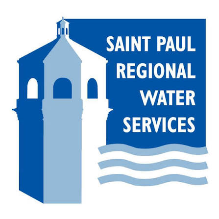

- Support the operation and upkeep of enterprise GIS and spatial data applications.
- Collect and manage high-accuracy GPS field data for infrastructure inventory and municipal asset management.
- Develop and maintain geospatial datasets in ArcGIS Pro and ArcGIS Online to improve city infrastructure records.
- Inspect and document streets, trails, retaining walls, utility systems, and other public infrastructure.
- Work with engineers, surveyors, and public works staff to support construction and long-term infrastructure planning.
Résumé
Experience at the intersection of data and place.
Geographic Information Science graduate with hands-on experience in municipal infrastructure, enterprise GIS, field data collection, spatial analysis, and mapping.
Experience

- Edited GIS datasets and maintained point, line, and polygon feature classes using Esri ArcGIS software.
- Supported GIS database maintenance, spatial data organization, mapping requests, and special projects.
- Collected and verified GPS field data before integrating it into GIS layers and spatial databases.
- Used mobile GIS tools to capture coordinates and asset information in the field.
- Oversee security operations and coverage at major venues, including U.S. Bank Stadium and Allianz Field.
- Supervise teams, coordinate assignments, and adjust operations during high-pressure events.
- Use leadership, communication, problem-solving, and decision-making skills to maintain safe event operations.
Education
Academic projects
Compared service design, travel time, station spacing, rider experience, and efficiency; mapped route changes and supported a StoryMap presentation.
Created a multivariate map of population patterns and transit access using ArcGIS Pro and ArcGIS Online.
Mapped police incident data, identified neighborhood-level spatial patterns, and visualized public-safety trends.